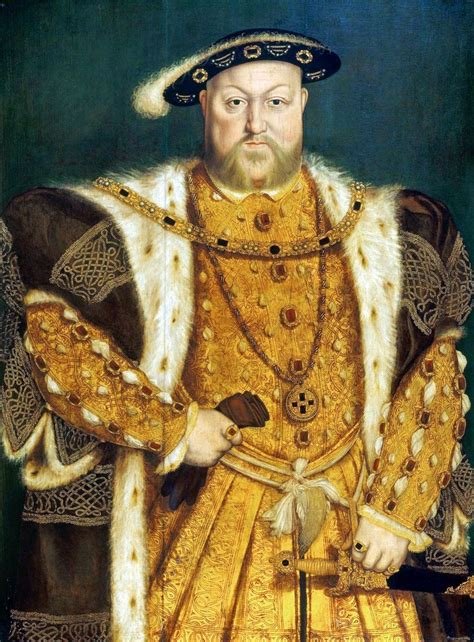
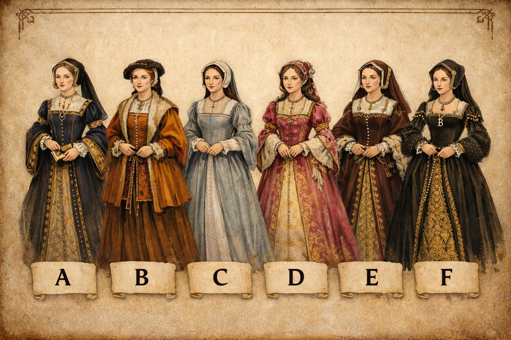

Welche Frau von Heinrich VIII. wärst du?
Stell dir vor, du wärst die Königin von England im 16. Jahrhundert.
1) Würdest du diesen Mann heiraten?

Eher nicht. Habe ich eine Wahl?
Wenn ich ihn mir jetzt so anschaue... lieber nicht.
Irgendeiner muss es ja tun, und vielleicht kann ich Frieden in sein Chaos bringen.
Aber sicher! Moment, eine Ehe ist nicht exklusiv, oder?
Wenn die Tradition es von mir verlangt.
Für politischen Einfluss heirate ich sogar den.
2) Wenn du politisch mitentscheiden könntest, was wäre dir am wichtigsten?
Mehr Einfluss für mich und meine Verbündeten.
Die Wahrung von Ordnung und Recht.
Förderung von Bildung und Reformen.
Sichere Versorgung meiner eigenen Haushalte.
Das Wohlbefinden des Volkes.
Frieden zwischen Hof, Adel und Volk.
3) Ein Gerücht über dich macht die Runde. Wie löst du die Situation?
Ich suche Nähe zu Verbündeten.
Ich ignoriere es offiziell, um meine Würde zu wahren.
Ich kläre es indirekt über die richtigen Kanäle.
Ich konfrontiere den Urheber / die Urheberin.
Ich lege alle Fakten auf den Tisch und beende das Ganze.
Ich ziehe mich zurück und warte ab.
4) Der König wechselt spontan seine Meinung und verlangt von dir etwas Unlogisches. Was tust du?
Ich hinterfrage die Logik dahinter und versuche, ihn zu einem klügeren Entschluss zu lenken.
Ich erfülle die Forderung pflichtbewusst ohne Widerspruch.
Ich bleibe ruhig, bestätige seine Entscheidung höflich, und setze sie dann auf die vernünftigste Weise um.
Ich folge der Anweisung, um ihn nicht zu verärgern.
Ich stimme sofort zu, gebe mir Mühe, und hoffe, dass er schnell das Interesse verliert.
Ich akzeptiere seinen Wunsch, erkläre aber behutsam die Folgen und schlage eine praktikable Lösung vor.
5) Was ärgert dich am meisten?
Wenn Menschen unüberlegt handeln und du es ausbaden sollst.
Wenn du zwischen streitenden Menschen vermitteln musst.
Wenn du ungefragt im Mittelpunkt stehst.
Wenn andere etwas von dir erwarten, das sie selbst nicht erfüllen würden.
Wenn jemand versucht, deine Entscheidungen zu kontrollieren.
Wenn Regeln keinen Sinn ergeben.
6) Du hast den Verdacht, dass dein Gemahl dir untreu ist. Wie reagierst du?
Ich halte still, eine Ehe ist kein ort für Zweifel.
Ich bete und hoffe, dass es sich von selbst erledigt..
Ich stelle ihn zur Rede.
Ich suche selbst Zerstreuung.
Ich bereite die Scheidungspapiere vor.
Ich beobachte das Ganze, bevor ich reagiere.
7) Was ist dir in einer Ehe am wichtigsten?
Gute Gespräche.
Aufmerksamkeit.
Harmonie.
Gemeinsamer Spaß.
Anständige Behandlung.
Treue.
8) Würdest du dich für deinen Gemahl ändern, wenn er es verlangt?
Ich versuche es, um den Frieden zu wahren.
Ja. Eine Ehe erfordert Opfer
Ich überlege genau, was ich aufgebe und was nicht.
Nein. Ich bleibe, wie ich bin.
Ja, wenn ich mir davon einen Vorteil verspreche.
Vielleicht, aber nicht dauerhaft.
9) Welches Outfit würdest du wählen?

A
B
C
D
E
F
Zurück
Weiter
Neu starten
Dein Ergebnis
Quizz neu starten